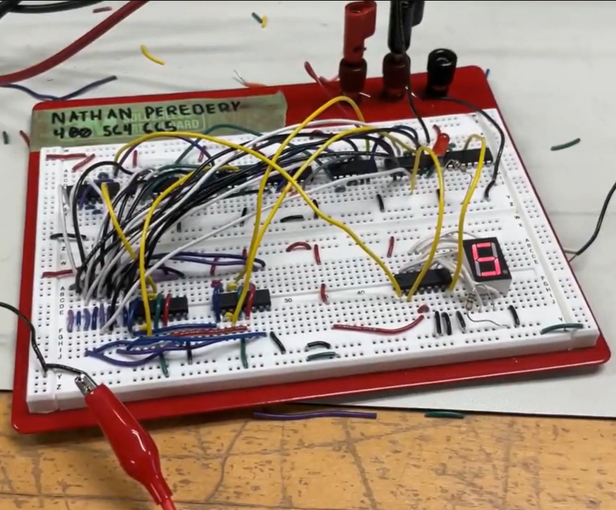
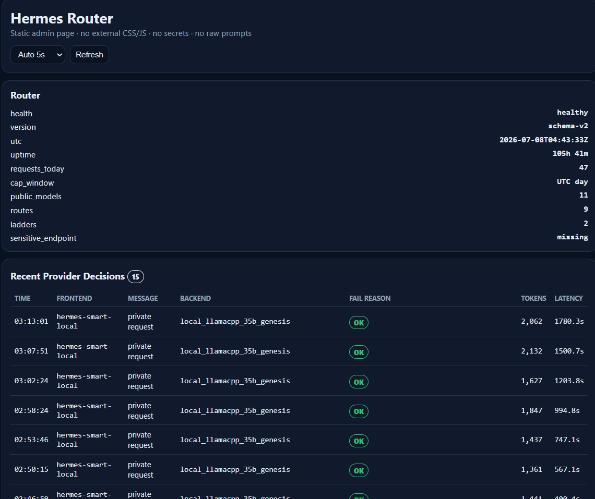

MECHATRONICS / AUTOMATION / SYSTEMS / PRACTICAL BUILDS
Engineering
Portfolio
I build practical systems across mechanical design, electrical logic, software automation, and integrated engineering workflows.
Featured Projects

Ultrasonic Room Scanner
A stepper-motor-driven ultrasonic mapper that sweeps a room, filters readings, and exports angle-distance data for 2D shape reconstruction.
Leadme
A local-first lead discovery and outreach drafting service built with Docker Compose, SQLite, and schema-validated JSON contracts.

Retractable Cane Stabilizer
A 3D-printed attachment that keeps a cane upright without changing normal walking ergonomics.

Student Number Finite State Machine
A 4-bit FSM that drives a 7-segment display through a repeated digit sequence using JK flip-flops and NAND logic.

Agentic Automation Infrastructure
A self-hosted agentic automation environment built with Docker Compose, custom model routing, and MCP integrations to run local and cloud-based AI workflows.
Automated Medical Document Synthesis
A full-stack web app that turns structured clinic data into consult letters while keeping sensitive data inside the secure environment.
About Me
My path to Mechatronics began with a sheet of cardboard and a roll of tape. Whether it was building a custom iPad holder for a treadmill or a tactical doorstop, I have always been driven by practical solutions to everyday problems.
Growing up in a household centered around Computer Science gave me an early feel for programming logic. Later, Autodesk Inventor and 3D printing in high school showed me that ideas could become real objects.
Since then, I have focused on projects that sit between mechanical design, electronics, and software. I am especially interested in work where constraints are real and the system has to behave reliably.
Resumes
Master Resume
Comprehensive resume covering mechatronics, software, mechanical, electronics, and embedded systems experience.
Software Resume
Resume tailored for software engineering, automation, and web application development roles.
Mechanical Resume
Resume tailored for mechanical engineering, CAD, and physical design roles.
Electronics Resume
Resume tailored for electrical engineering, circuit design, and digital logic roles.
Embedded Systems Resume
Resume tailored for embedded systems, firmware, and microcontroller-based engineering roles.